Temperature Forecasting with Machine Learning
Built and evaluated Gradient Boosting, XGBoost, and Neural Network models to predict temperature using weather time series data. Achieved reliable forecasts and validated model accuracy using both traditional and PCA-reduced datasets. Time series forecasting (ARIMA) also performed for short-term predictions.
1. Project Overview
This project applies machine learning techniques to forecast temperature based on weather data collected at the Max Planck Institute for Biogeochemistry. It combines regression models, PCA, and time series forecasting to identify patterns and generate predictions with real-world implications.
2. The Dataset
The dataset includes 14 weather-related variables recorded every 10 minutes between 2009 and 2016 in Jena, Germany. Variables include temperature, atmospheric pressure, humidity, wind direction, and more.

Distributions and Time Series
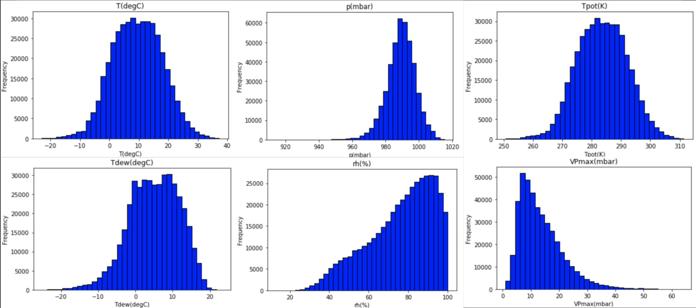 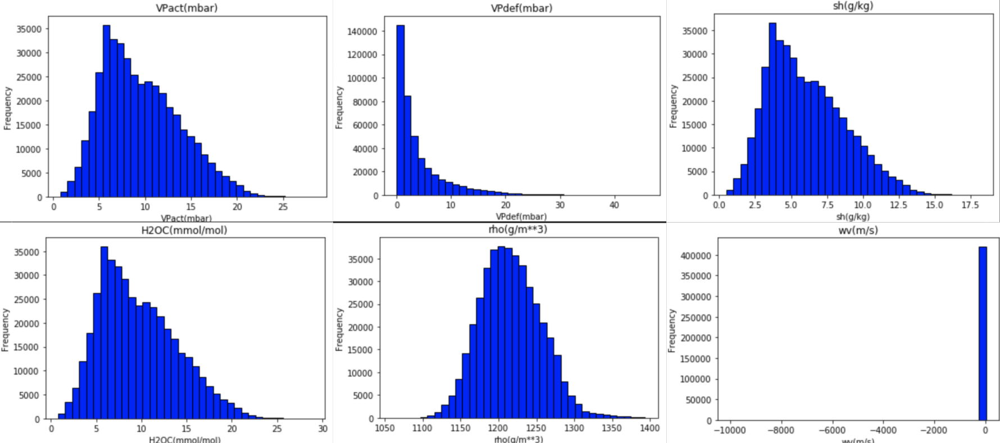 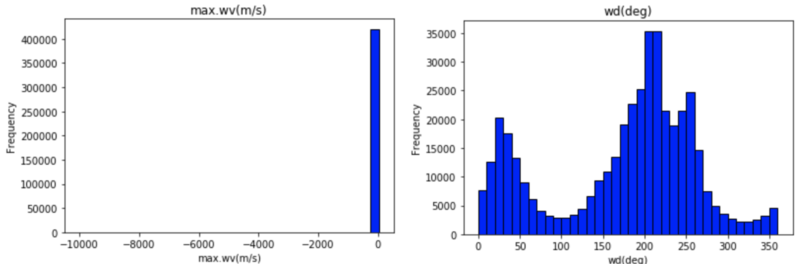 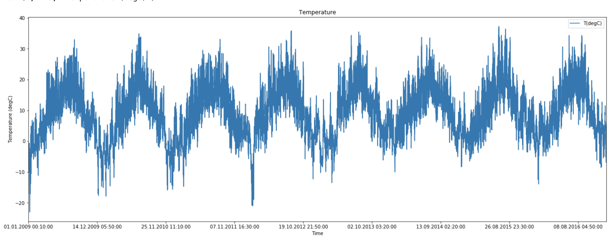Correlation Analysis
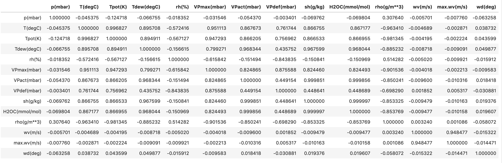 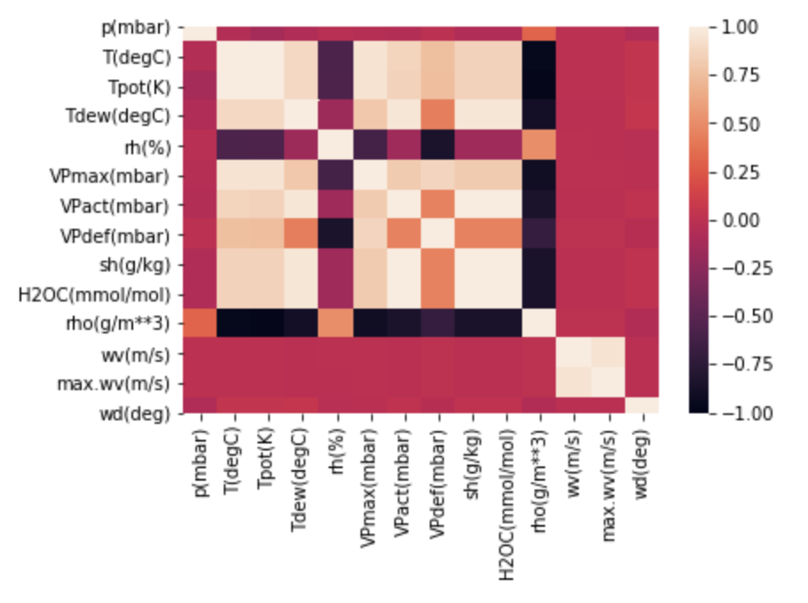3. Machine Learning Models
Data normalization was applied prior to training.
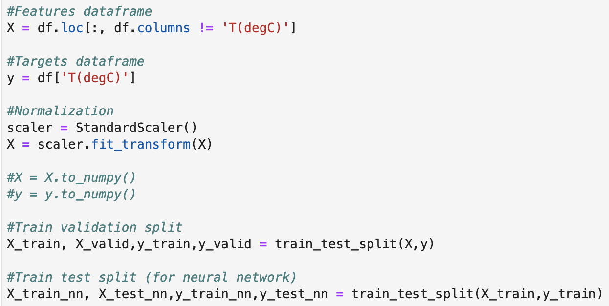Gradient Boosting
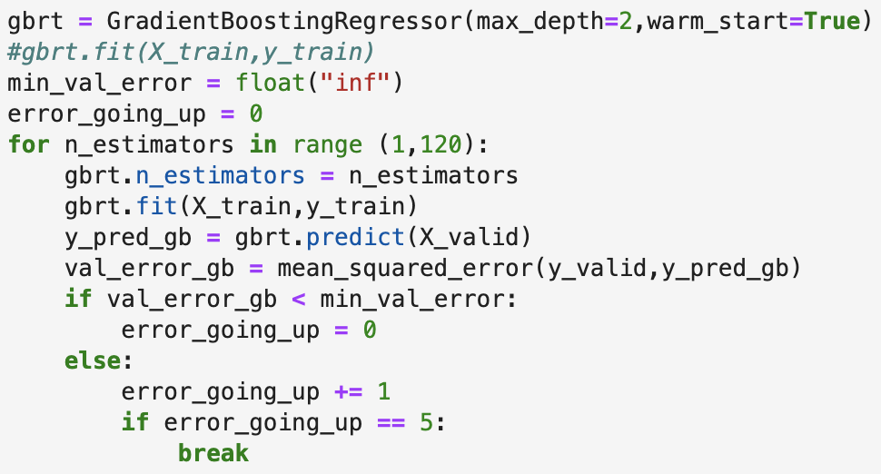XGBoost
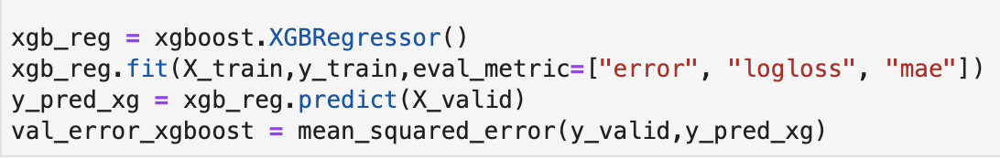 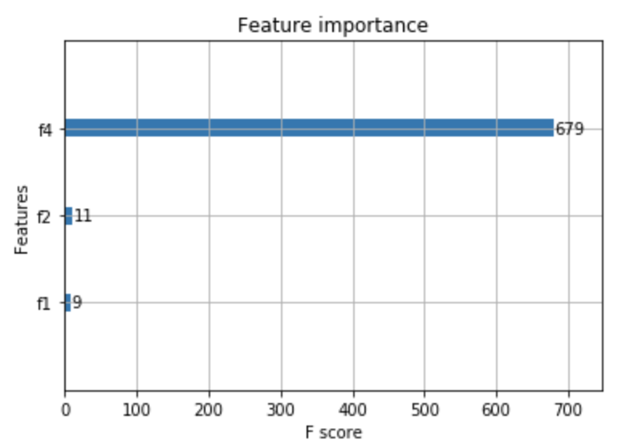Neural Network
 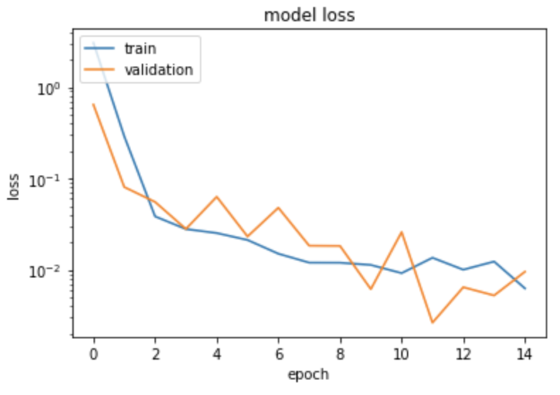
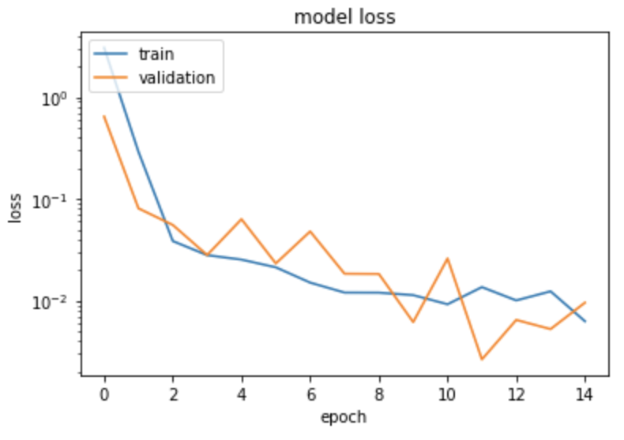

Model Comparison
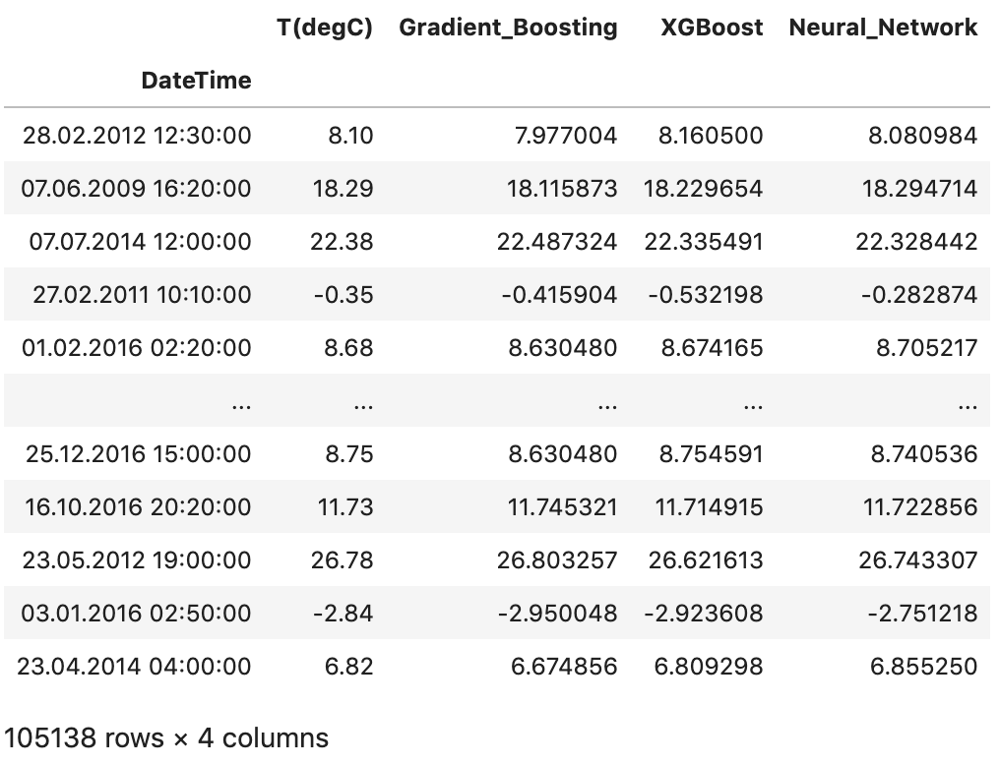 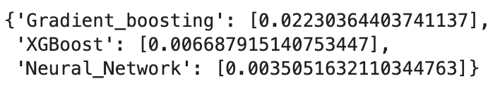4. PCA + Re-Training
PCA reduced features from 13 to 6 components. Models were retrained with reduced dataset.
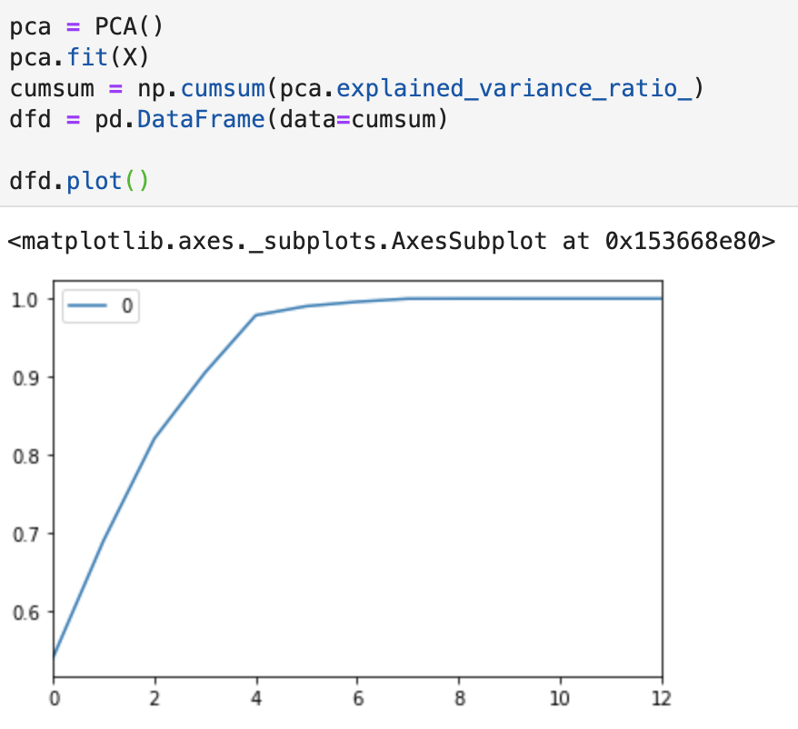 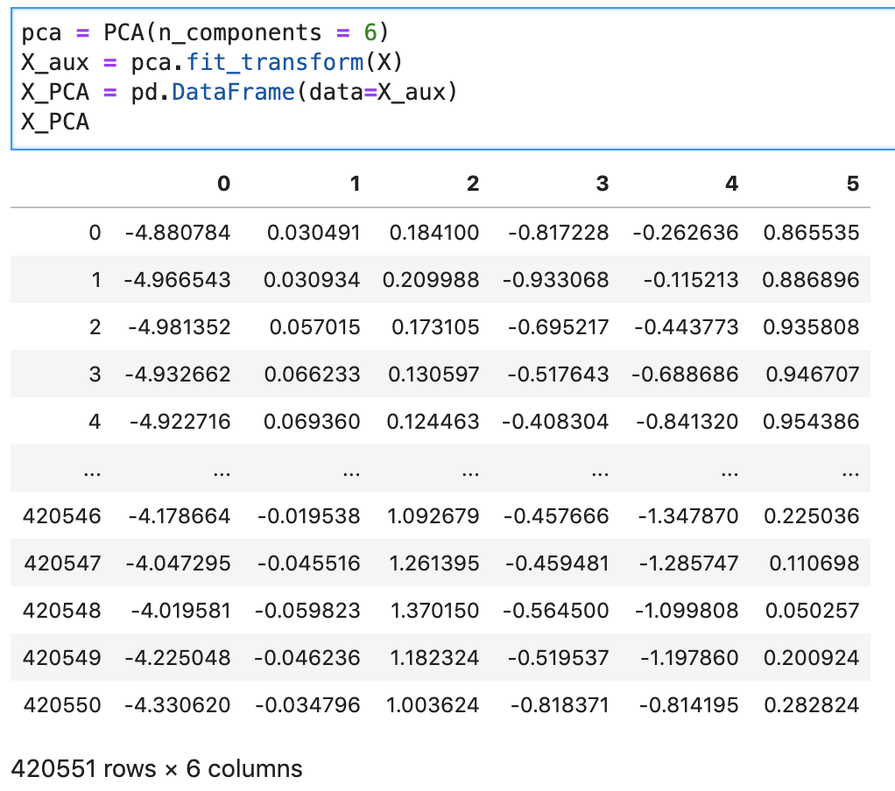 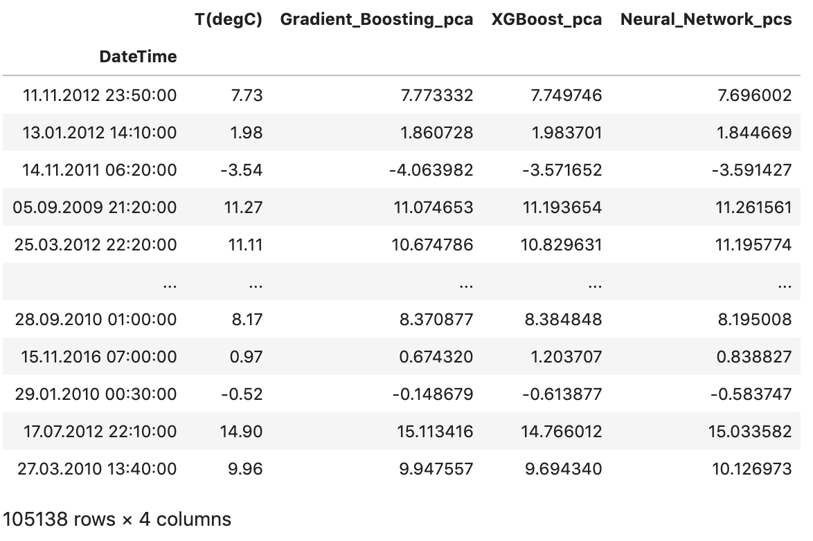 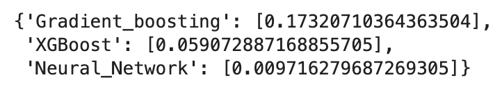Conclusion: PCA did not improve model accuracy in this case.
5. Time Series Forecasting
An ARIMA model was used to forecast future temperature values, five steps (50 minutes) into the future.
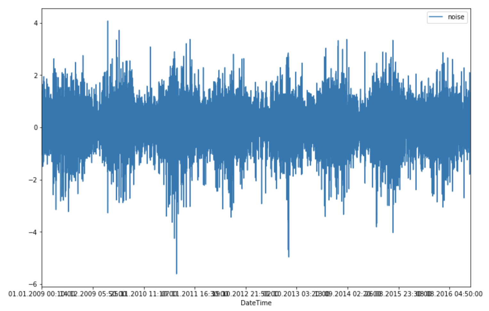 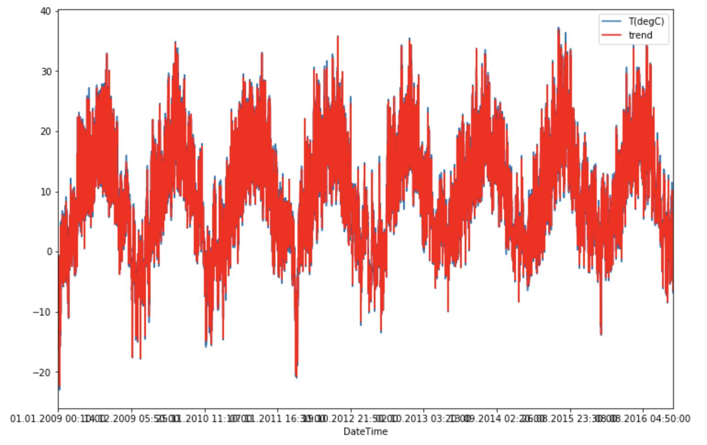 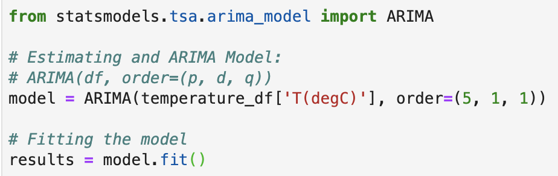 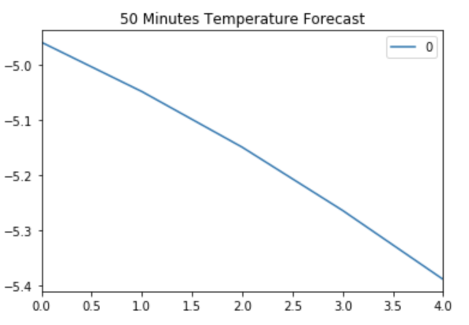 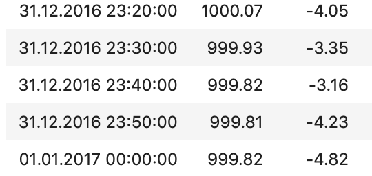